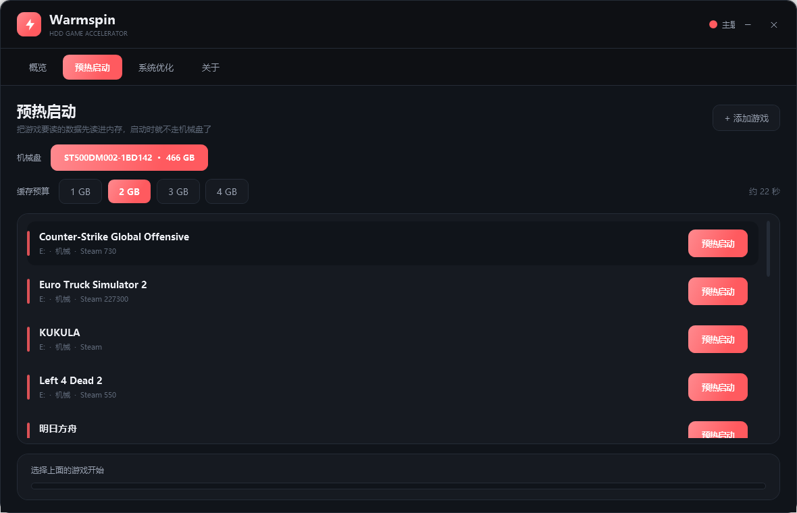

让机械盘上的游戏
加载快一点
把游戏要读的数据提前读进内存，修掉被"优化软件"关掉的预读、被漏掉的杀软扫描和碎片。开源、免费、单文件、不装驱动。
下载 Warmspin
四件事，都不需要装驱动、不常驻后台。
启动游戏前把最可能被读的数据读进 Windows 备用内存，游戏读图时走内存而不是磁头。预算 1~4 GB 可选，严格不超。
SysMain 预读、Prefetch、Defender 排除、关闭内容索引、关闭硬盘休眠、碎片整理。全部可一键还原。
扫 Steam 库、桌面与开始菜单快捷方式、注册表安装项。漏掉的可以手动添加，之后一直记住。
默认红黑，另有红白、靛蓝、青竹三套配色可切换。


不是。这是因为 exe 没有数字签名证书（一张代码签名证书每年要几百块），Windows 对任何未签名的新程序都会弹这个框，和文件本身是否安全无关。 可以点"更多信息 → 仍要运行"。如果你不放心，网站上有 SHA-256，下载后可以自己核对；也可以直接看源码自己编译。
Windows 10/11，系统自带的 .NET Framework 4.x。不需要装 .NET SDK、不需要运行时、不需要 Visual Studio。
因为要改 Windows 服务（SysMain）、注册表（Prefetch）、Defender 排除项和磁盘电源设置。这些不给管理员权限做不了。
同一张地图第二次进会明显更快，因为数据已经在系统缓存里。第一次进图仍然要从盘读，只是读的过程被提前到了启动前。
所有改动都记录在本地，点"还原改动"逐项恢复。程序不装驱动、不加开机启动、不联网（除了你主动点检查更新）。
MIT 协议，源码可读可改可自己编译。
powershell -ExecutionPolicy Bypass -File build.ps1